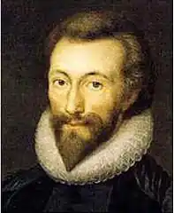

ДОНН, Джон (Donne, John — 22.01. або 12.02 1572, Лондон — 31.03.1631 там само) — англійський поет.Народився в сім'ї заможного купця. Його дідом по материнській лінії був популярний драматург і композитор Джон Хейвуд. Донн доводився родичем відомому англійському письменнику та державному діячеві Томасу Мору. Сім'я була католицькою за своїм віросповіданням, що за часів королеви Єлизавети становило чималу небезпеку. Так, брат Донна був ув'язнений лише за те, що прихистив на своїй квартирі під час навчання в університеті католицького проповідника; у в'язниці він і помер. Сам Донн через свою належність до католиків не зміг здобути ступінь магістра, хоча навчався, як припускає багато біографів, і в Оксфорді, і в Кембриджі. Врешті-решт, він змушений був закінчити школу юриспруденції у Лондоні. У 1596 і 1597 pp. взяв участь у військових експедиціях англійського флоту у Кадікс і до Азорських островів, які в той час належали Іспанії. Після повернення з походу став секретарем у Томаса Еджертона — Лорда Хранителя печатки. Очевидно, в цей час він і змінив віросповідання — залишаючись католиком, він не міг зробити серйозної кар'єри.
У грудні 1601 р. Донн таємно повінчався з Анною Мор, племінницею Еджертона. Коли про це дізнався тесть Донна, він домігся його звільнення з дому Еджертона та ув'язнення. Суд попри це визнав шлюб дійсним, і незабаром Донн був визволений. Батько Анни спробував вирішити ситуацію, що склалася, на свою користь: він повернув дочку молодому чоловікові, але відмовив у посагу. В наступні роки Донну разом із сім'єю, яка швидко збільшувалася, довелося жити спочатку в родичів, а потім за рахунок милостей вельможних покровителів. Іноді залежність Донна від волі інших людей призводила до сімейних конфліктів. Якщо вірити першому біографу поета — Волтону, приводом до написання одного з найвідоміших віршів Донна "Розлука без туги" ("A Valediction: Forbidding Mourning") стала його сварка з дружиною. Причиною сварки була необхідність для поета вирушити у подорож Європою разом зі своїм патроном Робертом Дрюрі, тоді як Анна чекала народження дитини. За легендою, яку наводить Дрюрі у своїй книзі, того ж дня, коли в дружини Донна були важкі пологи і вона перебувала на грані смерті, її привид з'явився перед поетом, котрий у той час перебував в Парижі.
У 1615 р. Донн прийняв сан священика. Пропозиції стати священнослужителем він отримував і раніше. У 1607 р. таку пропозицію зробив йому Т. Мортон, настоятель одного із соборів, на знак вдячності за допомогу в роботі над теологічним трактатом. Донн відмовився, очевидно, не забувши своїх ранніх віршів, поміж яких було чимало фривольних (прикметно, що деякі з цих віршів не друкувалися з цензурних міркувань аж до XIX ст.). Але в 1615 р. він зважився на цей крок не без тиску з боку короля Якова І, на якого велике враження справив трактат Донна, спрямований проти католицької церкви. У 1621 р. Донн став настоятелем собору Св. Павла і займав цю посаду до кінця життя. У цей період він прославився як блискучий проповідник. Свої проповіді Донн ретельно редагував і готував до видання, оскільки саме з проповідями, а не з віршами він пов'язував надії на посмертну літературну славу. Останню проповідь Донн проказав за декілька тижнів до смерті, пізніше вона була названою "Дуель зі Смертю". Помер Донн 31 березня 1631 p., похований у соборі Св. Павла. За життя Донна було опубліковано лише кілька віршів, решта були відомими у списках. Уперше зібрання віршів Донна було видане вже після його смерті у 1633 р. Точне датування створення багатьох віршів раннього періоду творчості невідоме. Донн звертався до багатьох популярних жанрів єлизаветинської літератури: сатир, сонетів, елегій, пісень, послань і т. д. Але багато традиційних жанрів під його пером зазнають суттєвих змін. Як одну з найхарактерніших тенденцій його творчості можна відзначити відмову від музичності єлизаветинської лірики та орієнтацію на розмовну мову. І хоча Донн міг створювати й дуже мелодійні вірші, особливо в жанрі пісні, все ж у його поезії домінують інтонації розмовної мови, а багато віршів нагадують драматичні монологи. Близькістю до драматичних монологів визначається і своєрідність доннівських сатир. В якості головного героя в них виступає іронічний і дотепний оповідач, здатний кількома штрихами намалювати картини з життя Лондона, портрети сучасників і подати в комічному або гротескному світлі — залежно від ситуації — їхні вади. Інакше підходить Донн і до традиційної для єлизаветинців теми кохання. У багатьох його ранніх віршах звучить виклик багатьом поняттям, притаманним любовній ліриці того часу, але які від багаторазових повторень утратили життєву силу. Так, надмірній ідеалізації любовних стосунків він протиставляє навмисну еротичність своїх віршів, наприклад, у таких, як "Наука кохання" ("Nature's Lay Idiot"), "На роздягання коханої" ("То His Mistress Going to Bed"), "Любовна війна" ("Love's War"). На противагу рицарській вірності в коханні, Донн закликає до постійної зміни партнерів ("Зміна" — "Change"). Водночас поет не зводить кохання лише до фізичних стосунків; справжнє кохання, на його думку, неможливе без духовного зв'язку, який часто розглядається ним під впливом філософії неоплатонізму як єднання душ ("Екстаз" — "The Ecstasy", "Доброго ранку" — "The Good Morrow"). Охоче пародіює Донн і поетичні звороти, що стали штампами в сучасній йому ліриці. Якщо В. Шекспір у 130-у сонеті викриває пустопорожність поетичних штампів, показуючи, що з їхньою допомогою неможливо створити образ реальної живої людини, то Донн вже користується іншими прийомами. Так, у вірші "Анаграма" ("The Anagram") автор пропонує поміняти місцями традиційні епітети жіночої краси: очі зробити маленькими, а рот — великим, червоним кольором змалювати не щоки, а — волосся, чорним — не брови, а зуби і т. п. Така гра була характерною для літератури бароко, розквіт якої припадає саме на XVII ст. У літературі бароко народився й особливий вид метафори — концепт, або кочетті, — яка досить часто зустрічається в поезії Донна. У такій метафорі важливе не порівняння одного предмета чи явища з іншим, а важлива сама несподіваність зіставлення далеких і нічим не схожих, здавалося б, понять і хвиля асоціацій, яка народжується у свідомості читача, котрий намагається відшукати цю схожість. Із концептів Донна найвідомішим є концепт з вірша "Розлука без туги", побудована на уподібненні душ закоханих до ніжок циркуля: Отак зрослись моя й твоя душа,Мов циркуля дві ніжки золоті:Одна душа в дорогу вируша,А друга знає всі її путі.(Пер. В. Коптілова)Концепти Донна зазвичай вирізняє інтелектуальність і розгорнутість (іноді один концепт займає увесь зміст вірша). У пізніший період своєї творчості Донн звертається до релігійних тем. Близько 1610 р. він створив цикл віршів під назвою "Священні сонети" ("Holy Sonnets"). Цим творам властива така ж пристрасність і напруга почуття, яка була характерною для ранньої любовної лірики Донна, лише тепер його кохання звернене не до земної жінки, а до Бога. У "Священних сонетах" поет використав також досвід релігійної медитації, яку розробив і ввів у релігійну практику християнської церкви засновник ордену єзуїтів Ігнатій Лойола (1491—1556). Для того, хто практикував таку форму медитації, необхідно було відтворити у своїй уяві якусь сцену з Нового Заповіту, помістити себе серед дійових осіб, а потім проаналізувати свої переживання і зробити моральний урок. Іноді Донн у "Священних сонетах" використовує цю ж схему. Окрім значної кількості проповідей, до прозових творів Донна належать також памфлети "Псевдомученик" ("Pseudo-martyr", 1610), "Ігнатій і його конклав" ("Ignatius, His Conclave", 1611) і трактат "Біатанатос" ("Biathanatos", бл. 1611). Донн вважається засновником школи "метафізичної поезії" в англійській літературі. Першими щодо поезії початку XVII ст. цей термін використали Дж. Драйден (1631—1700) і С. Джонсон (1709—1784), але вони вкладали в нього негативний смисл: під "метафізичною" вони мали на увазі надмірно ускладнену, позбавлену логічної зрозумілості і гармонійності поезію. Попри це, термін закріпився в історії літератури. Окрім Донна, до поетів-метафізиків відносять Е. Марвелла, Дж. Герберта, Г. Воена, Р. Крешо та деяких інших поетів. Українською мовою окремі твори Донна переклали Д. Павличко, В. Коптілов, Л. Череватенко. Переспів із Донна здійснив Б. Мозолевський (вірш "Таїна" у зб. "Веретено" — К., 1980). В. Ганін